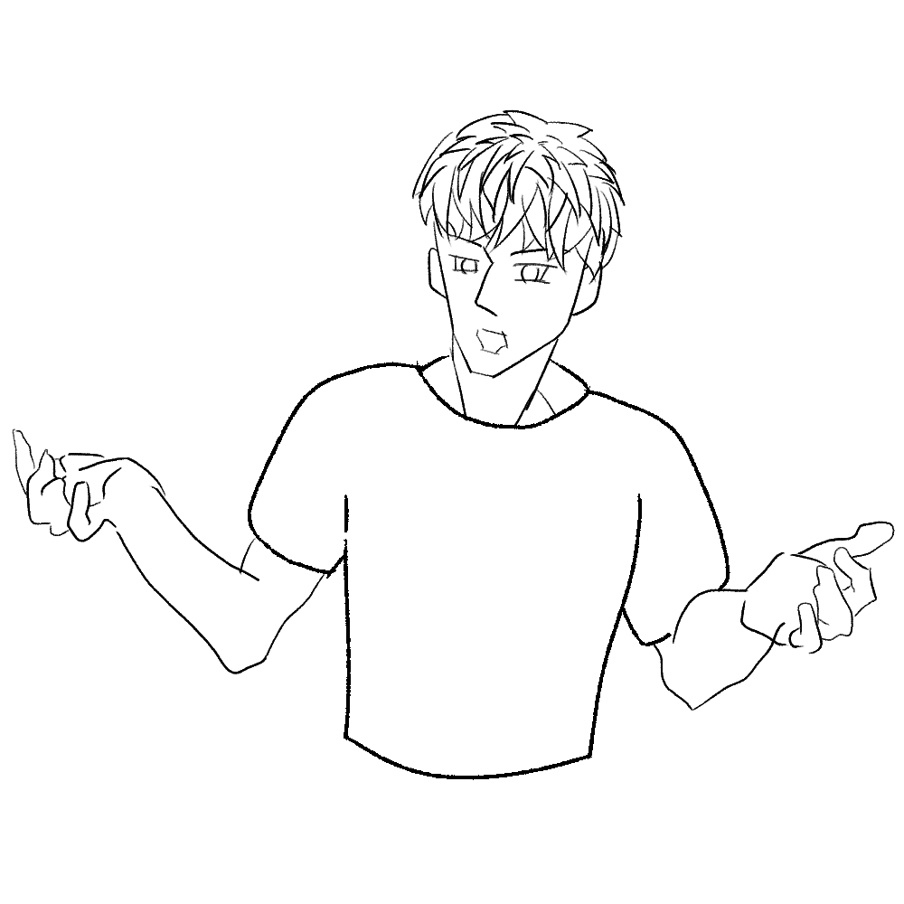
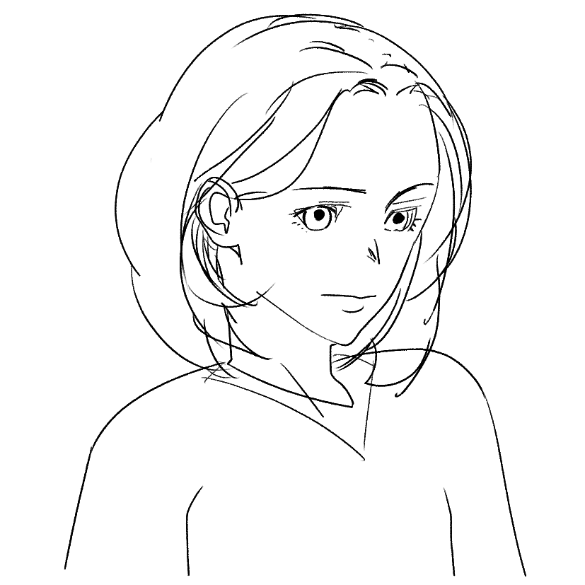
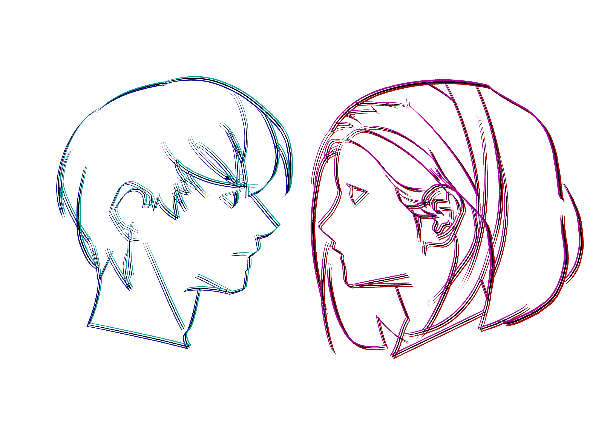
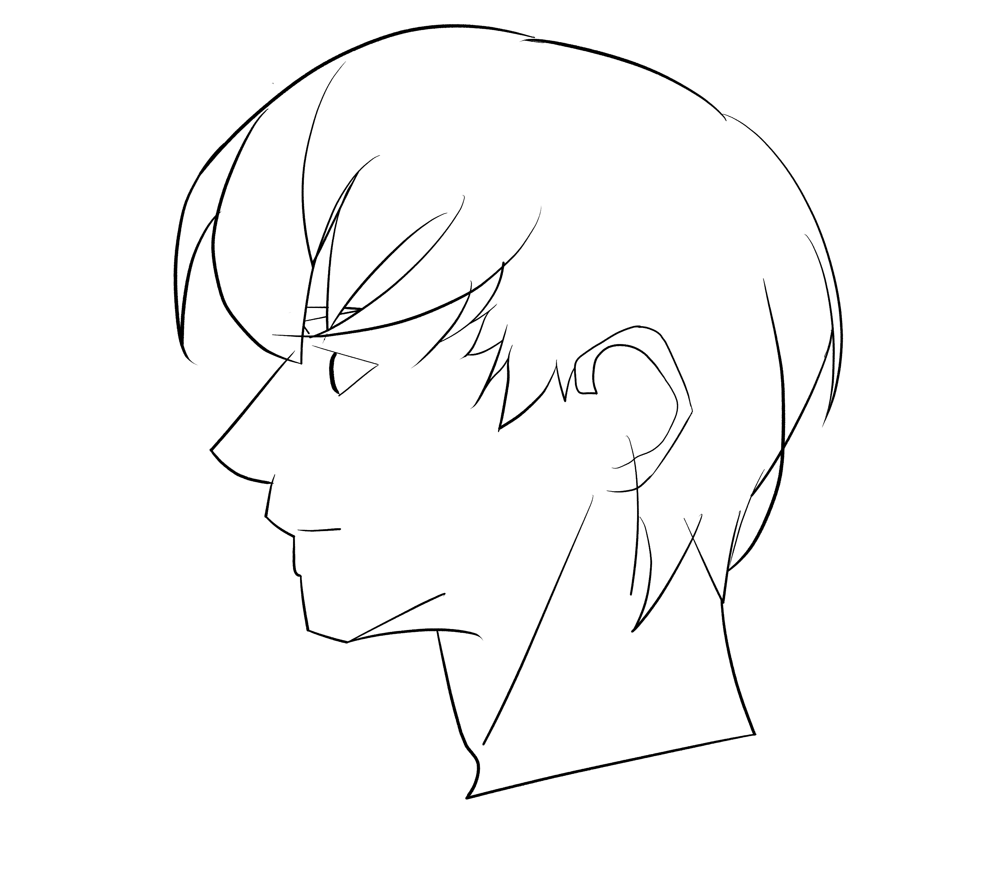
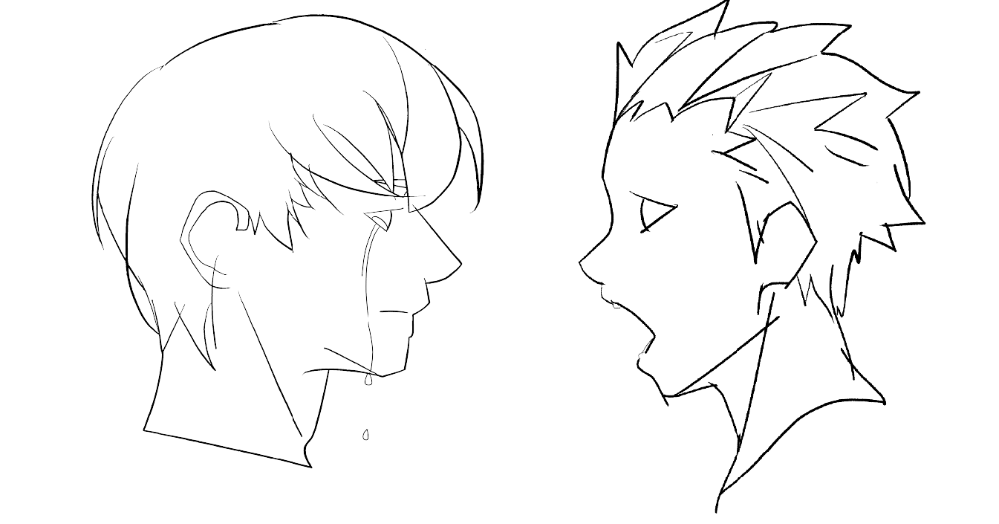
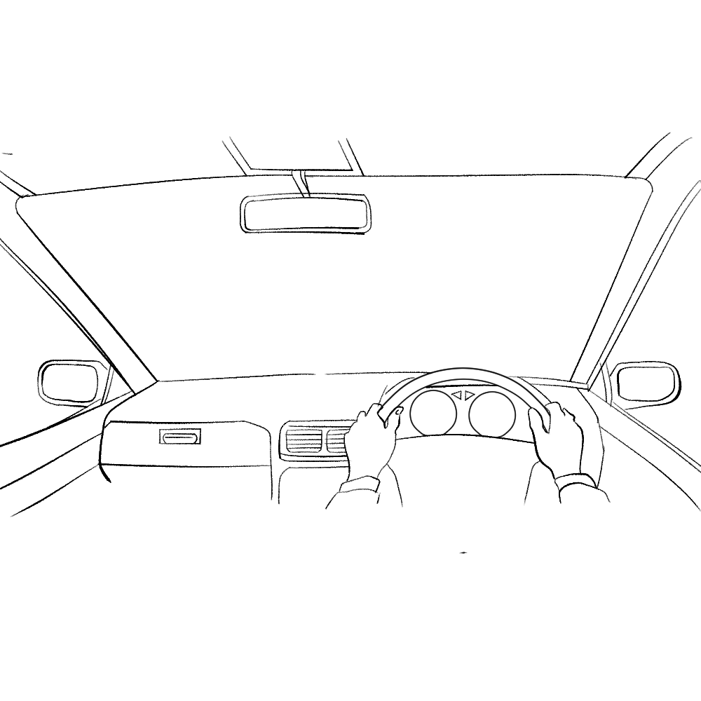
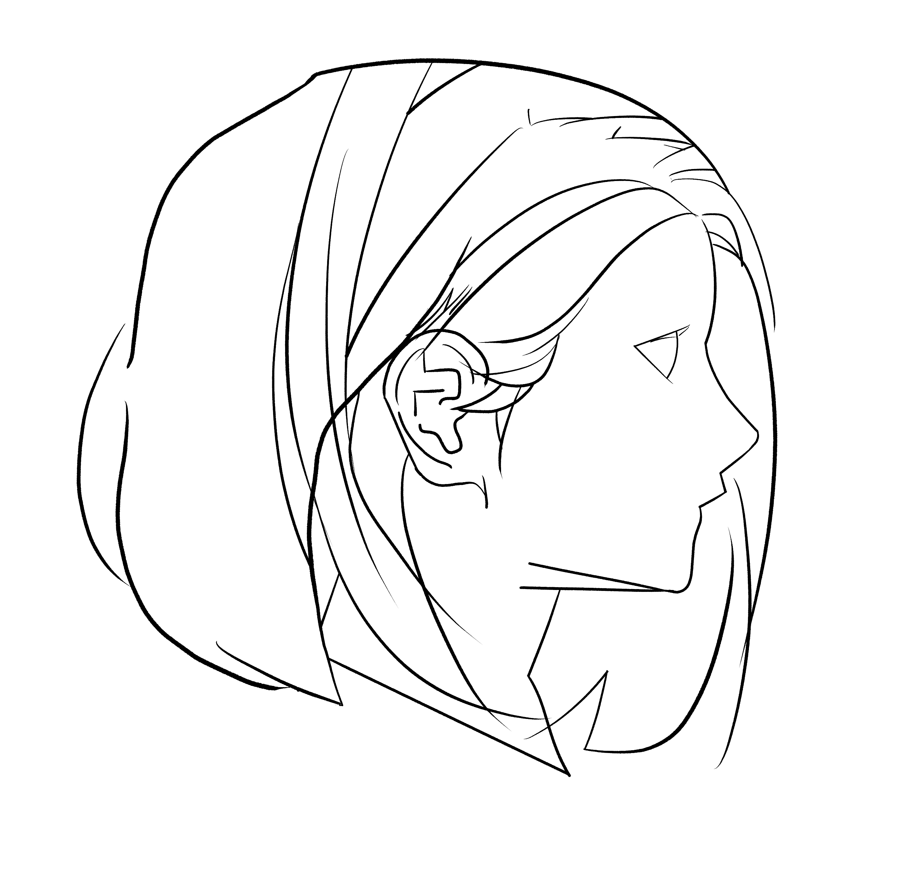
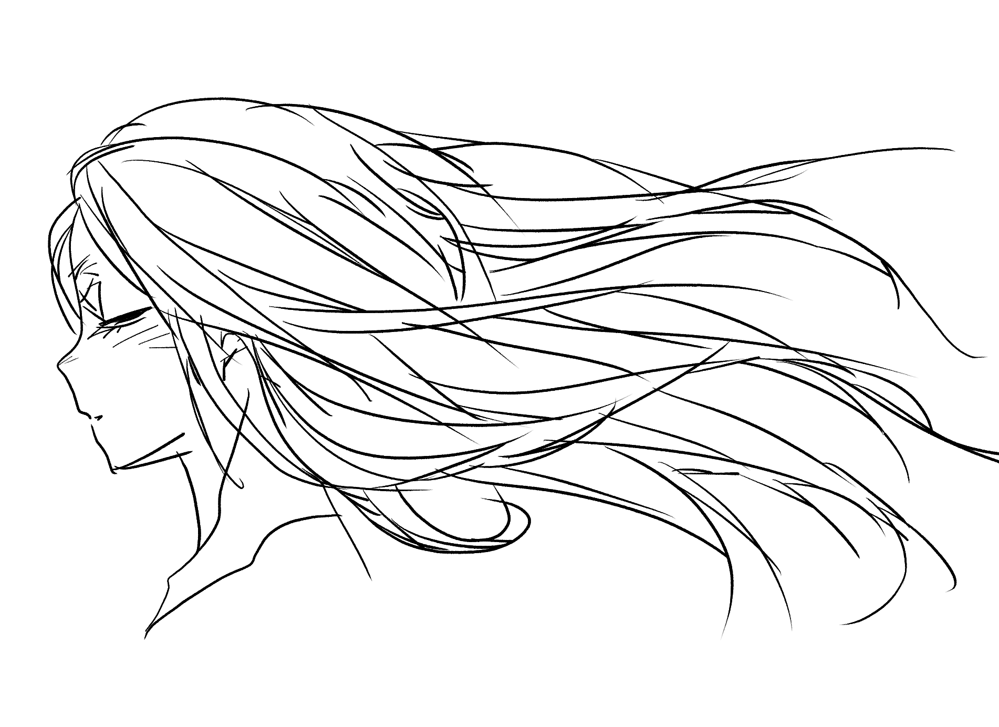

タイトル
説明文

父へのインタビュー
説明文
それでは、インタビューを始めます。
よろしくお願いします。
何か20代の転機はありますか？
思いつく一番でかいやつ。初めに。
自分の中での20代の転機と。
結婚。
うん。お母さんを結婚かなって言ってた。
27、8？の時だよね。
そう、そうだね。
それまでは車の仕事についてたんだけど。
何にしろ続かなくて。
それは、つまんなかったってこと？
つまんないんじゃなくて。
腐ってたのよ。
うん。よくお母さんからもお父さんにはちゃらんぽらんな時期があったって。
何やっても腐ってて長続きしないし。
けどね、周りの人とかが色んなことを築いてるじゃん。
そんな中でやっぱこれはまずいなって。
気づいたと。
うん。
思いながらも、まだ何をやればいいのかわからなくて。
うん。
けど、そんな中で父親がやってる仕事も気になって。
んで、親父の仕事をやるって言ったんだよ。
それは何で気になったの。
うーん。
なんかね、ちょっと自分の性に合ってたんだよね。
元々よく親父の仕事よく手伝ってたんだよ。
車の整備士？しながらお手伝いもしてたの？
そうそう中学校の時とか。
そんなちっちゃい時か。
うん。手伝いにこいって言われて行ってた。
気になってたんだ。
うん。
整備士続かないというか、もうやだってなって。
うん。
昔から気になってるおじいちゃんとこ行ったんだ。
それは、何歳くらい？
けど、まあ、本格的にやり始めたのは23、4かな。
けど整備士わりと若い頃からやってたんじゃない？
長続きしないって言ってたけど。
いや、実際はね、トラック、バスの整備、日産に入った。
日産ディーゼルって、トラックの整備士の会社。
そこで、もう直ぐ辞めたの。２年で。
あ、２年やったんだ。うん。
その間もやっぱちょこまか親父のとこ行ってたんだけど。
けど、ちゃんと給料もらえるところにと思って。
また違う整備士。一旦。
うん。
で、そこでもやっぱ、ダメだった。
え、やりたいわけじゃなかったの？車の整備士。
違うなと思った。
俺、トラックとかバスのでっかいエンジンやってたの。
うん。
んで、乗用車をやったら、なんか本当におもちゃみたいな。
へー。
まあ順番が逆だったらどうかっていうのもないんだけど。
なんかこう、違うなと。
で、ならどうせなら楽しいのがいいと。
うーん。でも、悩んではないな。
親父の仕事をやってみようとはずっと思ってた。
しっかり働こうってのは、やっぱお母さんと結婚することを見据えてたの。
結婚するまで長いじゃん、二人って。
なんかお母さんはおばあちゃんとお店やったりしてたじゃん。
しっかり働こうってのは、やっぱお母さんと結婚することを見据えてたの。
結婚するまで長いじゃん、二人って。
なんかママはお母さんとお店やったりしてたじゃん。
これ録音してるんだっけ。
うん。
まあいいや。ママ、お酒の仕事してたの。
以上にさ、なんつうの、嫉妬心が強かったんだ。俺。
多分誰かに取られちゃうんじゃないかって。
そんな気持ちがあったんだ。多分お母さん知らないね。
そう、だから、、、
けど、稼ぎはないしさ。
これ、まずいなと思ったけど、やっぱ、なんか、そういう、
葛藤があった。
うん、けどやっぱな。
好きって気持ちは素直だから。
うんうん。
何とかちゃんとしなきゃって思ってて。けど、仕事には手がつかなくて。
そんな時に、うちに兄貴からお前何やってんだって言われたの。
言ってきたんだ。
けど、それってもう図星もいいところじゃん。
お前何やってんだって。
それまでは、親父はずっと黙って見て見ぬふりをしてくれてたのね。
い、いいことなのかな。
それは。
んで、やばいなと。
自分の中でも、それは薄々感じてたことなんでしょ？
その、いや、このままじゃちょっとやばいなと。
それをちゃんと
兄貴が言ってきたの。
んで、なんか知らないけど、兄貴がさ
こんなこと言いたくなかったんだけどなって
泣きながら言ってきたの。
ほんとはお前にね、こんなきついこと言いたくないけど
言わなきゃ、やっぱりさって。
そんなことがあったんだ。
お兄さん、いつもふざけてる印象があるけど、熱い男なんだ。
これはお兄さんと二人だけの秘密みたいな？
兄貴が言ってきたの。
んで、なんか知らないけど、兄貴がさ
こんなこと言いたくなかったんだけどなって
泣きながら言ってきたの。
ほんとはお前にね、こんなきついこと言いたくないけど
言わなきゃ、やっぱりさって。

兄にハッとさせられる父
1つ目の質問
2つ目の質問
3つ目の質問
1つ目の回答
2つ目の回答
3つ目の回答
1つ目の質問
2つ目の質問
3つ目の質問
1つ目の回答
2つ目の回答
3つ目の回答

子供が生まれて車から見える世界が変わったという父

母へのインタビュー
説明文
それでは、インタビューを始めます。
よろしくお願いします。
何か20代の転機はありますか？
何か思いつく一番でかいやつ。初めに。
自分の中での20代の転機と。
結婚。

ミスチルに出会う母（これからアニメーションをつけます）
1つ目の質問
2つ目の質問
3つ目の質問
1つ目の回答
2つ目の回答
3つ目の回答